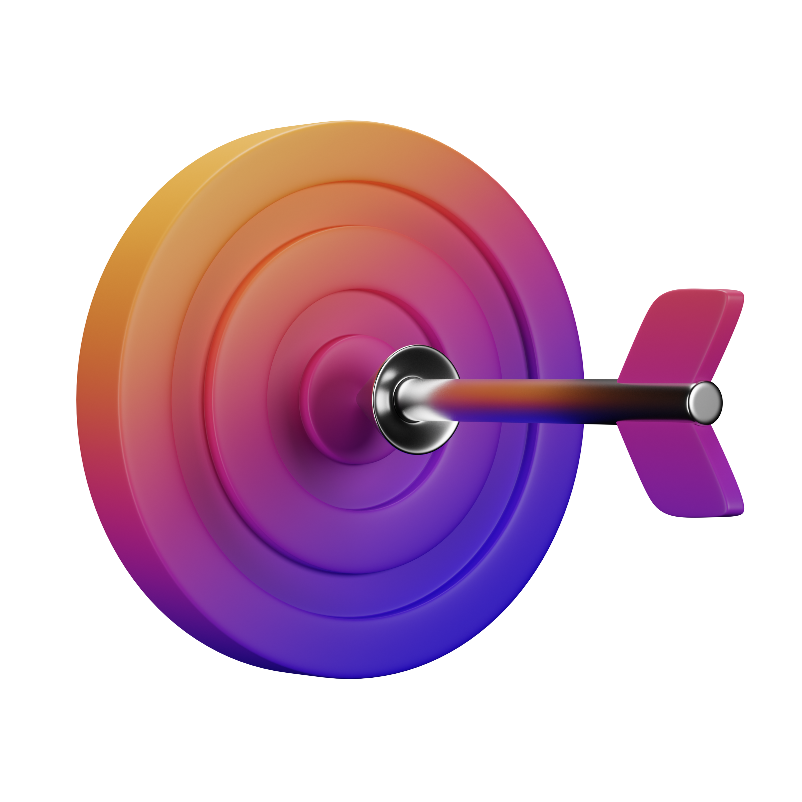

Note Orange Controle de Cursos
Mantenha o controle dos seus cursos
O Note Orange é um lugar onde você pode monitorar e organizar o andamento do curso que estiver realizando.
Você no Controle de tudo
Simples e fácil
Registre o andamento do seu curso com o Note Orange e mantenha o controle do seu progresso.

Ajuda no que você mais precisa
Objetivo
O objetivo do Note Orange é ajuda-lo a saber onde você está no seu plano de estudos.